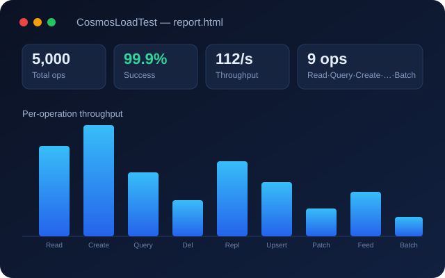

A .NET 8 command-line tool that drives a configurable load against Azure Cosmos DB (NoSQL) across all nine document operations — Read, Query, Create, ReadFeed, Upsert, Patch, Replace, Delete and transactional Batch. You set the request rate, total operations, document size and the percentage mix per operation; it paces the workload, tracks every request, and produces a clean HTML report with throughput, latency percentiles and requested-vs-actual operation mix.
🚀 One click spins up a Windows VM that downloads, builds and runs the workload — fill the form in the Azure Portal, no setup required.
